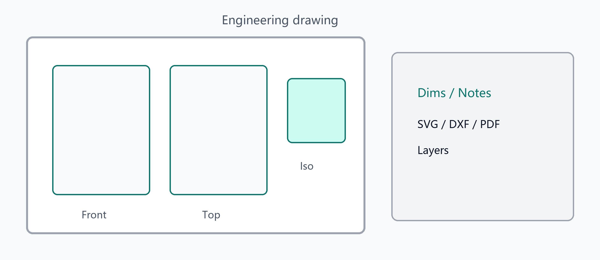

工程图纸多视图
工程图纸工作区
切换到工程图模式后，使用 Ribbon（视图 / 绘制 / 标注 / 修改 / 捕捉 / 输出）从三维 B-rep 生成二维图纸。右侧属性面板可改图层与 ByLayer / ByBlock 覆盖。
进入与生成
- 基于 HLR 的多视图：正视 / 俯视 / 右视、等轴测、剖视；第一角 / 第三角投影
- 剖视：切线握柄可拖；再生时可驱动切面；支持半剖（正视一侧表达层裁剪）
- 局部放大：父视图细节圆可拖改；局部视图随区域更新
- 可选钉住投影，避免拖视图时投影约束被冲掉
- 图幅 A0–A4 / 自定义、标题栏字段、内容比例；侧车
engineeringDrawing 随项目保存
绘制与修改
- 草图：直线、矩形、圆、弧、样条；修剪 / 延伸 / 偏移 / 缩放 / 倒圆 / 倒角 / 打断 / 合并；拉伸；矩形阵列与环形阵列（含草图实体）
- 对象捕捉：端点 / 中点 / 交点 / 圆心 / 垂足 / 最近点；正交与极轴
- 拾取时高亮点（端点方框、中点三角等）与悬停线/实体，便于区分点选与线选
标注
- 线性、角度、半径、直径；连续尺寸与基线尺寸
- 尺寸样式、公差覆盖；弱关联边键（移动视图时尽量跟边）
- 引线注释、多行文字；粗糙度与形位公差框（轻量符号，DXF 以文字/几何近似）
图层、图块与互通
- 用户图层：可见 / 锁定 / 冻结 / 可打印；实体 ByLayer / ByBlock / 覆盖
- 建块、插入、炸开；图框属性上图（ATTDEF）；属性面板改参照
- DXF：圆 / 弧 / 块与属性往返；导出另支持 SVG、PDF；打印预览与 CTB 灰度表